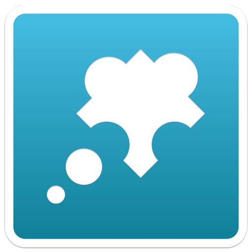
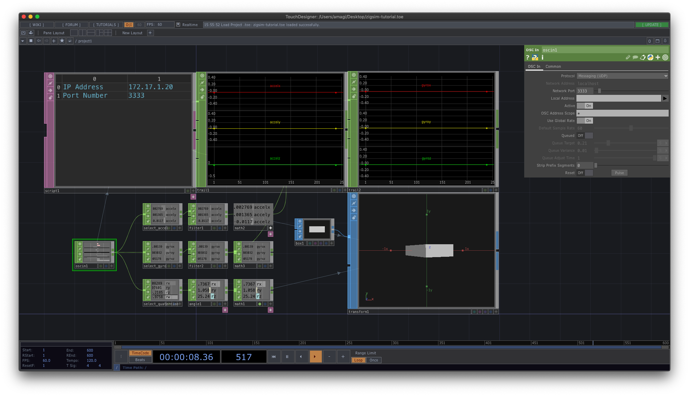

Tutorial: Send motion data to PC
In this page, we will learn how to send motion data from your device to PC.
To receive the data we use ZIG Indicator and TouchDesigner.
Using ZIG Indicator

ZIG Indicator is a desktop app to receive and visualize data sent from ZIG SIM.
Note: some features are not supported yet, as ZIG Indicator was developed before ZIG SIM v2.0.0.
1. Install ZIG Indicator
Download ZIG Indicator from here:
- Windows: https://zig-project.com/release/ZIG_indicator_v1.1.0_x64.zip
- macOS: https://zig-project.com/release/ZIG_indicator_v1.1.0_osx.zip
2. Run ZIG Indicator
Unzip the archive and run ZIG Indicator.
The app will look like this:
The IP address of the PC is displayed in the sidebar on the left.
Change the port number to receive the data if you want.
3. Run ZIG SIM on the device
Launch ZIG SIM app on the device.
Before monitoring, we have to update the Settings so that ZIG SIM can send data to the PC.
Go to Settings and follow these steps:
- Set
Protocolto UDP. - Set
IP AddressandPort Numberto the values displayed in ZIG Indicator. - Set
Message Formatto JSON.
Next, go to Sensor tab and select the commands to get data.
Tap Acceleration, Gyro and Quaternion to enable these commands.
After that, go to Start tab to start monitoring.
You will see the data being displayed on the screen.
4. Press Start Button in ZIG Indicator
Finally you can see the result in ZIG Indicator.
Press Start button in the sidebar to start monitoring.
You can see the motion data visualized on the screen.
Try shaking the device to make sure the data is updated correctly.
🎉🎉🎉 Done! 🎉🎉🎉
Using TouchDesigner
TouchDesigner is a visual programming system developed by Derivative Inc.
It's widely used in the field of interactive art, realtime audio visual performance, etc.
1. Install TouchDesigner
Download the installer from the website:
https://www.derivative.ca/099/Downloads/
Then open the file and follow the instruction.
If no errors, TouchDesigner will be installed to your PC.
2. Open the Sample Project with TouchDesigner
Download the sample project from here and open it:
zigsim-tutorial.toe
The app will look like this:
The IP address of the PC and the port number to receive data are displayed on the left.
You can change the port number on the parameters panel on the right, iff you want.
3. Run ZIG SIM on the device
Launch ZIG SIM app on the device.
Before monitoring, we have to update the Settings so that ZIG SIM can send data to the PC.
Go to Settings and follow these steps:
- Set
Protocolto UDP. - Set
IP AddressandPort Numberto the values displayed in TouchDesigner. - Set
Message Formatto OSC.
Next, go to Sensor tab and select the commands to get data.
Tap Acceleration, Gyro and Quaternion to enable these commands.
After that, go to Start tab to start monitoring.
You will see the data being displayed on the screen.
4. See the Result
Finally you can see the result in TouchDesigner.
Press the start button at the bottom to start monitoring.
🎉🎉🎉 Done! 🎉🎉🎉
← Getting Started Touch →